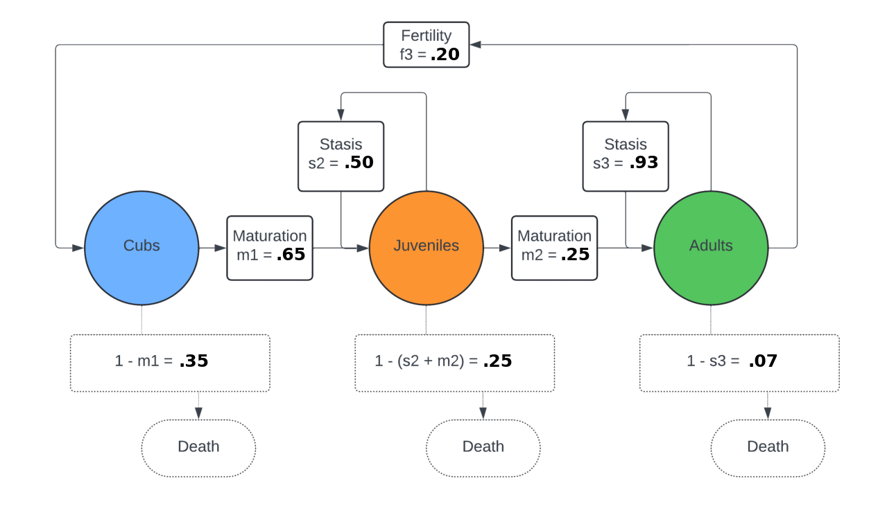

Lab 14: Applications of Eigenvectors¶
In this lab you will explore an application of eigenvalues and eigenvectors for population modeling. You will need to import the following libraries:
>>> import numpy as np
>>> import numpy.linalg as la
Population dynamics is the study of how a population of individuals (e.g., organisms or animals) changes over time, including the numbers and ages of the organisms that comprise the population. It is common to model these population dynamics by a matrix population model that categorizes population members into various groups. We define categories of infants, juveniles, and adults.
Before we dive into the details of computing population dynamics with eigenvalues and eigenvectors, navigate in another tab to this Black Bear Population Demo. It takes a bit to load, and so we’ll let that load while we proceed.
Modeling Population Dynamics with a Transition Matrix¶
Population members begin in one stage (class) and transition through to other stages or possibly die off. Our simplified setting models transitions from stage to stage on a yearly basis, meaning that we consider an individual to be in a single class for the entirety of a year, possibly changing to another class the next year. More specifically, we will consider stasis, maturation, fertility transition values:
stasis, \(s_i\): Probability that an individual in state \(i\) remains in state \(i\)
maturation, \(m_i\): Probability that an individual in state \(i\) transitions to state \(i+1\) (if such next state is possible)
fertility, \(f_i\): Probability that an individual in state \(i\) produces an offspring in state \(1\)
NOTE: Although our model really has four states - cub, juvenile, adult, and dead - we can model the “dead state” implicitly as an “absorbing” state (that is, no dead bear can become a living cub, juvenile, or adult). Note that the probability of death can be inferred by the other parameters as \(d_i = 1 - s_i - m_i\).
The following diagram shows an example population dynamics model for a population of black bears. In the case of this specific population, \(s_1, f_1, f_2, m_3 = 0\) because of biological characteristics of the species. For example, \(s_1 = 0\) because cubs only remain in the cub stage for at most one year, and so no stasis is possible for that class.
{kind=link}
We can translate a state diagram that describes the transitions between different states as a transition matrix, \(A\), for the three states cub, juvenile, and adult, where the entry \(A_{ij}\) corresponds to the average number of individuals that enter into state \(i\) from a single individual in state \(j\):
The eigenvectors and eigenvalues of this transition matrix identify important long-term behavior of the corresponding population; namely, both (i) the growth/death of the population and (ii) the long-term population ratio can be inferred from the dominant eigenvalue and corresponding eigenvector of \(A\).
Since \(A\) has non-negative entries and is irreducible, then by the Perron-Frobenius Theorem
There exists a unique dominant, positive eigenvalue \(\lambda_1 > 0\), with \(\lambda_1 > |\lambda_i|\) for all \(i = 2, \ldots, n\).
The eigenvector \(v_1\) associated with \(\lambda_1\) can be scaled to have all positive entries.
This eigenpair \((\lambda_1, v_1)\) is referred to as the principal eigenvalue and eigenvector of the matrix \(A\).
In the context of population modeling, \(\lambda_1\) corresponds to the population’s asymptotic growth rate, and \(v_1\) corresponds to the stable age distribution. The “stable age distribution” is the proportion of individuals of each stage that will remain constant barring changes to the vital rates.
Task 1¶
Write a function pop_transition_matrix(s1, s2, s3, m1, m2, f2, f3) that accepts stasis, maturation, and fertility values and constructs the corresponding transition matrix using a Numpy array.
Make sure the corresponding transition matrix reflects a valid population dynamics model. Namely,
All entries must be non-negative.
The stasis and maturation parameters for a given state (i.e., column of \(A\)) must sum to a value less than or equal to \(1\).
If the matrix is not a valid population dynamics model, raise a ValueError.
Task 2¶
Write a function compute_principal_eig(A) that accepts a transition matrix and returns the principal eigenvalue and its corresponding eigenvector in a list. See the Numpy function numpy.linalg.eig.
The Numpy function eig will sometimes return numbers of the form a+b*j, where j is the square root of -1. As this may return complex values of the form a+0*j, use np.real to convert these values into (real) floats. You may need to use the command float() to convert the results of this function from np.float64 to the usual float data type.
Task 3¶
Write a function simulate(A, p, t) that simulates t steps of the population dynamics model represented by the Numpy array A, with initial population value vector p given as a list.
Return a list of the corresponding t+1 population vectors.
NOTE: If
phas negative entries, raise aValueError.
Task 4¶
Head to the Black Bear Population Demo that you opened at the beginning of the lab. This web app computes each of the things that you have written in this lab. On the left hand side of the page you can vary the stasis, maturation, and fertility parameters.
The principal eigenvector is displayed as a pie chart reflecting the proportion of the population that each class (state) makes up.
The principal eigenvalue is displayed as the title of the plot of the population count.
Questions:
Play around with setting different model parameters \(s_2, s_3, m_1, m_2, f_3\). What happens to the population count when \(\lambda_1 < 1\) ? How about when \(\lambda_1 > 1\) ?
Set the parameters to the following setting: \(s_2 = 0.5, s_3 = 0.93, m_1 = 0.65, m_2 = 0.25, f_3 =0.2\). Now, for each parameter, see how the principal eigenvalue \(\lambda_1\) changes as a result of changing the parameter by \(\pm 0.05\). Which parameter has the greatest effect on the value of \(\lambda_1\) ?
Bonus Questions¶
Given the following matrix \(A\), complete Task 3 with \(t = 50\) iterations for a few different initial vectors p (e.g., p = np.array([500, 400, 1000])), but normalizing the final population vector to have norm one.
Compare this normalized population count vector to the principal eigenvector for this given transition matrix.
What do you notice about these vectors as compared to the principal eigenvector of
A?
This demo connects to the Power Method (AKA Power Iteration), which is an iterative method for identifying the principal eigenpair of a diagonalizable matrix. One can find the dominant eigenvector of a square matrix by repeatedly applying the matrix in question to an initial vector. See the Wikipedia page on the Power Method for more information.